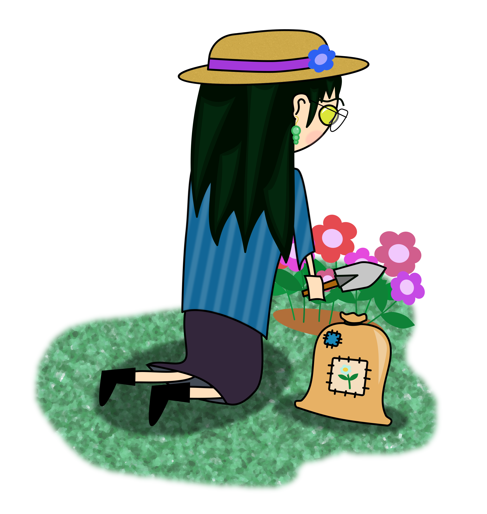
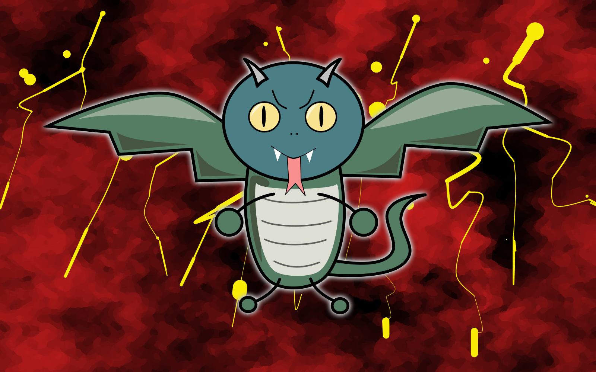
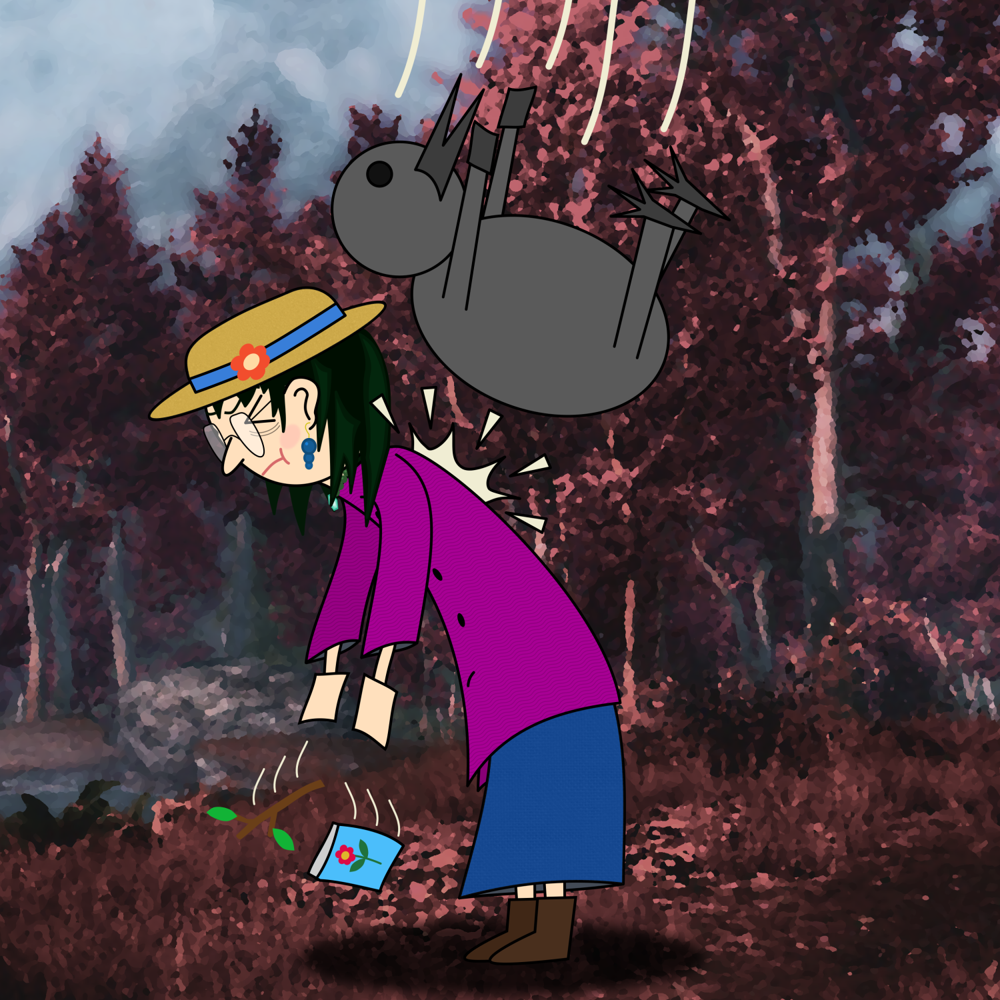
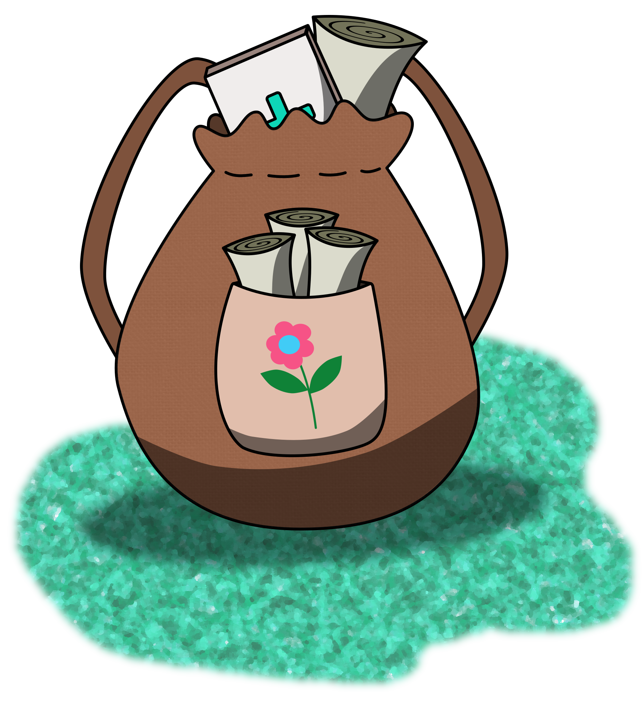
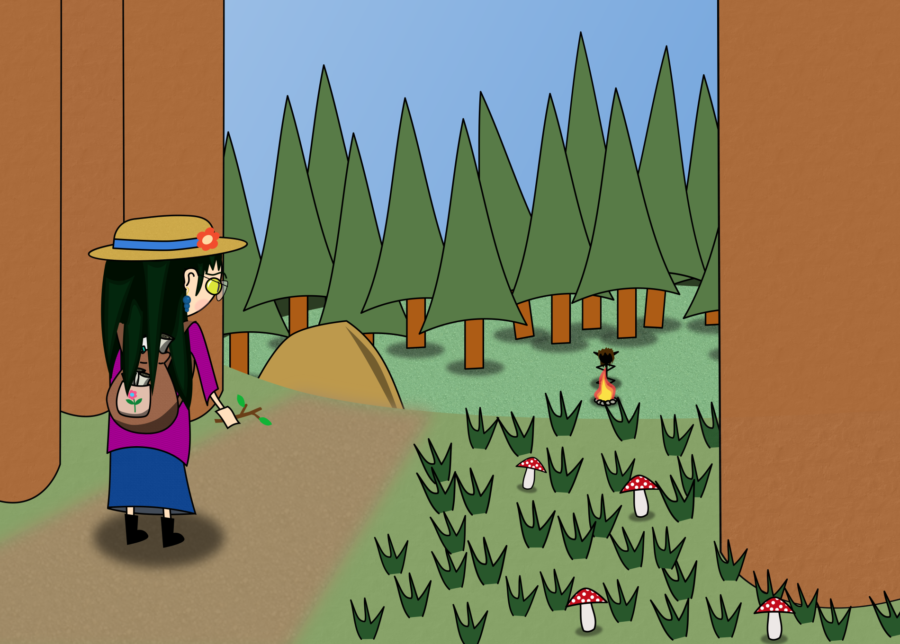
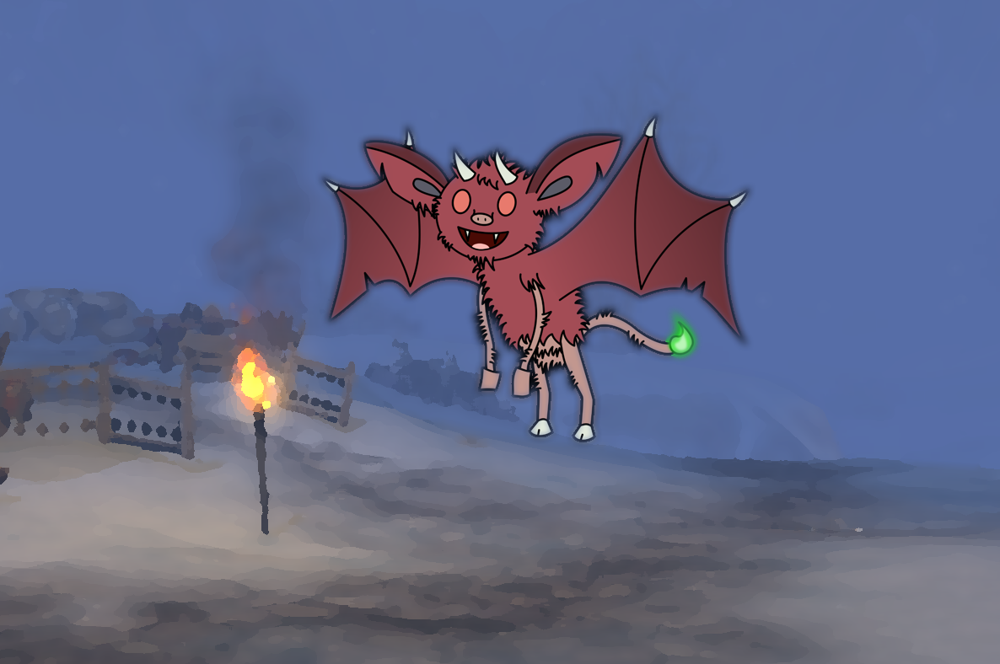

Es war ein warmer Sommermorgen in Hlontdeth. Der Geruch von Lavendel lag in der Luft und das Summen fleißiger Bienen erfüllte die morgendliche Stille. Unter den aufmerksamen Augen der Brutwächter begannen in den Nestanlagen von Hlontdeth langsam die Eier des letzten Frühlingsgeleges zu schlüpfen. Maciji war eine der ersten Yuan-Ti Reinblütler welche die Schale durchbrach und das wärmende Schimmern der Sommersonnenstrahlen, welche sich durch das scheinbar endlose Geäst der säuberlich gepflanzten Schlehen und Stechpalmen schlängelten, spürte. Auch wenn dieser Moment lange vor allem liegt, an was sie sich erinnern kann, war dieser Augenblick ausschlaggebend – nahezu schicksalhaft – für Macijis weiteren Werdegang. Während ihrer Kindheit verbrachte die kleine Reinblütlerin die meiste Zeit in den örtlichen Grünanlagen und dem königlichen Garten um die gut duftenden Blumen zu bewundern und das Wiegen der Blätter im Wind zu genießen. Maciji besuchte auch regelmäßig Extaminos' Voliere – allerdings nicht wegen der Vögel sondern viel mehr wegen der prachtvollen Bäume und exotischen Blumen welche von den Gärtnern voller Sorgfalt gepflegt wurden. Sie betrat das pompöse Vogelhaus so oft, dass sie schon fast selbst den obligatorischen Zauberspruch "Mordenkainens Schutz vor vogelähnlichen Kreaturen" gelernt hatte. Angesichts Macijis Verbundenheit zu Pflanzen und ihrem Auge für die Ästhetik der Natur war es nicht weiter verwunderlich, dass sie den Weg des Gärtnerns einschlug.
Während ihrer Kindheit verbrachte die kleine Reinblütlerin die meiste Zeit in den örtlichen Grünanlagen und dem königlichen Garten um die gut duftenden Blumen zu bewundern und das Wiegen der Blätter im Wind zu genießen. Maciji besuchte auch regelmäßig Extaminos' Voliere – allerdings nicht wegen der Vögel sondern viel mehr wegen der prachtvollen Bäume und exotischen Blumen welche von den Gärtnern voller Sorgfalt gepflegt wurden. Sie betrat das pompöse Vogelhaus so oft, dass sie schon fast selbst den obligatorischen Zauberspruch "Mordenkainens Schutz vor vogelähnlichen Kreaturen" gelernt hatte. Angesichts Macijis Verbundenheit zu Pflanzen und ihrem Auge für die Ästhetik der Natur war es nicht weiter verwunderlich, dass sie den Weg des Gärtnerns einschlug.
Im Gegensatz zu den üblichen Yuan-Ti-Tempelanlagen und deren Bewohnern gab es unter den primitiven Einwohnern Hlondeths, immerhin ein paar Kreaturen, welche die sensationelle Schöpfung genialer Gärtner zu schätzen wussten. Maciji hatte deswegen kein Problem Gleichgesinnte (wobei sich das „gleich“ nur auf die Wertschätzung des Schaffens schöner Gärten bezieht und keinesfalls auf den Stellenwert der Kreaturen in Macijis Weltansischt) zu finden: Die örtliche Gärtnergilde. Maciji konnte dieser aufgrund ihrer Fähigkeiten problemlos beitreten und dort einen Mentor finden: Zardin – "Der, dem sich die Wildnis beugt". Zardin war ein Firbolg, welcher das Druidenleben aufgab um seine Vorstellung von Natur und wie sie auszusehen hat in die Welt zu tragen. Unter Zardins strenger Führung wuchs Maciji zu einer bemerkenswerten Gärtnerin heran, die neben dem Umgang mit Zierblumen auch Kenntnisse in der Verarbeitung von Heilkräutern und -pflanzen erlangte. Sie war eine der talentiertesten und darum auch beliebtesten Mitglieder in der lokalen Gärtnergilde. Ihr Ruf als "Virtuosin der Gärten" eilte ihr so weit voraus, dass viele andere Einwohner Hlondeths Maciji um Rat beim Gärtnern fragten. Sogar die königlichen Hofgärtner baten sie um Hilfe beim Bepflanzen neuer Rosen- und Kamelienbeete. Regelmäßig erhielt Maciji auch Schreiben aus weit entfernten Städten und Ländern. Die Briefe beinhalteten oft Bitten um Rat oder einfach nur Bewunderung ihrer Fähigkeiten.
Auch wenn es wider ihrer Natur war primitiven Kreaturen zu helfen, war Maciji ganz anders, wenn es ums Gärtnern ging. Sie konnte – unabhängig des Gesprächspartners und ob dieser überhaupt zuhört – stundenlang über die Eleganz von akkurat gepflegten, symmetrischen Gärten oder über die stilvolle Wildheit natürlich aussehenden Wachstums reden. Allerdings war Maciji nur eine von wenigen Yuan-Ti welche den Anmut der Natur und das Vergnügen diese nach eigenem Willen anzupflanzen zu schätzen wusste. Fast alle anderen Yuan-Ti (und auch die sonstigen, niederen Kreaturen) nahmen die sorgsam angepflanzten Blumen und Sträucher als selbstverständlich wahr und schenkten ihnen keine besondere Aufmerksamkeit. Selbst gewissenhaft gepflegte Gärten behandelten diese einfältigen Tölpel mit Gleichgültigkeit. Maciji war immer verärgert, wenn andere die Gärten unordentlich machten und die Schönheit artifizieller Natürlichkeit nicht bewunderten. Deswegen gab sie auch die Traditionen der Yuan-Ti und den Glauben an Sseth auf und wandte sich Chauntea zu. Im Gegensatz zu den friedvollen Druiden, welche Chaunteas Leitsatz ("Wachstum und Ernte sind Teil des ewigen Kreislaufs und der natürlichste Teil des Lebens. Zerstörung ohne Grund und etwas einzuebnen, ohne neu zu errichten sind Sünden. Lasse keinen Tag vergehen ohne nicht einem Lebewesen zum Gedeihen verholfen zu haben. Pflege, kümmere dich und pflanze wann immer es möglich ist. Schütze Bäume und Pflanzen, beschütze ihre Samen, so dass alles was zerstört wird auch neu wachsen kann. Kümmere dich um die Fruchtbarkeit der Erde, aber lasse die fruchtbaren Menschen sich um sich selbst kümmern. Lösche Feuer. Pflanze wenigstens jeden Zehntag eine Pflanze oder einen Samen.") auf harmonische Weise leben, möchte Maciji der ganzen Welt die Schönheit von Yuan-Ti-Hand geschaffener Natur näher bringen. Obwohl die Verehrung der Erdmutter nicht durch Gaben oder Gebete zum Ausdruck kommt, fühlt sich Maciji verpflichtet das Dogma Chaunteas zu verbreiten.
Selbst gewissenhaft gepflegte Gärten behandelten diese einfältigen Tölpel mit Gleichgültigkeit. Maciji war immer verärgert, wenn andere die Gärten unordentlich machten und die Schönheit artifizieller Natürlichkeit nicht bewunderten. Deswegen gab sie auch die Traditionen der Yuan-Ti und den Glauben an Sseth auf und wandte sich Chauntea zu. Im Gegensatz zu den friedvollen Druiden, welche Chaunteas Leitsatz ("Wachstum und Ernte sind Teil des ewigen Kreislaufs und der natürlichste Teil des Lebens. Zerstörung ohne Grund und etwas einzuebnen, ohne neu zu errichten sind Sünden. Lasse keinen Tag vergehen ohne nicht einem Lebewesen zum Gedeihen verholfen zu haben. Pflege, kümmere dich und pflanze wann immer es möglich ist. Schütze Bäume und Pflanzen, beschütze ihre Samen, so dass alles was zerstört wird auch neu wachsen kann. Kümmere dich um die Fruchtbarkeit der Erde, aber lasse die fruchtbaren Menschen sich um sich selbst kümmern. Lösche Feuer. Pflanze wenigstens jeden Zehntag eine Pflanze oder einen Samen.") auf harmonische Weise leben, möchte Maciji der ganzen Welt die Schönheit von Yuan-Ti-Hand geschaffener Natur näher bringen. Obwohl die Verehrung der Erdmutter nicht durch Gaben oder Gebete zum Ausdruck kommt, fühlt sich Maciji verpflichtet das Dogma Chaunteas zu verbreiten.
Um ihre gärtnerischen Fähigkeiten noch weiter auszubauen, es ihr zu ermöglichen, Gärten eigenständig vor der Verschmutzung durch philisterhafte Nichtsnutze beschützen zu können und die stümperhaften Banausen von der Herrlichkeit akribisch angelegter Blumenbeete zu überzeugen hatte Maciji den Plan gefasst, einen Pakt mit Yoggaa, Gärtner von Mephistopheles' Frostgarten, einzugehen. Sie hoffte mithilfe von Ritualen und Magie noch schönere Gärten gestalten zu können und die einfältigen Trottel zur Bewunderung derer zu
Sie hoffte mithilfe von Ritualen und Magie noch schönere Gärten gestalten zu können und die einfältigen Trottel zur Bewunderung derer zu bringen zwingen. Anstelle von Yoggaa jedoch erhörte eine schelmische Lillend namens Kelmus Macijis Gesuch und trat ihr in Gestalt von Yoggaa in Erscheinung. Kelmus, wie alle Lillendi, verabscheut ebenfalls die sinnlose Zerstörung der Natur. Auch wenn ihre Vision von "Natur", welche hauptsächlich aus natürlich und wild gewachsenen Pflanzen besteht, sich deutlich von der Macijis unterscheidet, versprach sie ihr Kräfte, die es der Reinblütlerin ermöglichen, die Schönheit des Lebens zu kultivieren. Im Gegenzug verlangte Kelmus, dass Maciji durch die Welt zieht, um eben genau diese Schönheit zu verbreiten. Voller Begeisterung, dass ihre Bitte um Hilfe erhöht wurde, stimmte die Reinblütlerin dem Vertrag ohne Widerworte zu – ein Fehler, wie sich ihr einige Zeit später herausstellte. Die "Schönheit des Lebens" von der Kelmus sprach, bezog sich nicht nur auf die Ästhetik der Natur sondern auf das Leben aller Kreaturen an sich. Eine von Macijis Aufgaben ist es also nun durch die Welt zu ziehen um Kranke und Verletzte zu heilen. Auch wenn ihr ihre neue Zauberkraft gefällt, erfüllen die Aufgaben ihrer Patronin Maciji mit Missmut. Darum ist sie auf der Suche nach einer Möglichkeit den Pakt zu beenden – oder zumindest neue Konditionen auszuhandeln – ohne dabei ihre neu erlangten Fähigkeiten zu verlieren.
Kelmus, wie alle Lillendi, verabscheut ebenfalls die sinnlose Zerstörung der Natur. Auch wenn ihre Vision von "Natur", welche hauptsächlich aus natürlich und wild gewachsenen Pflanzen besteht, sich deutlich von der Macijis unterscheidet, versprach sie ihr Kräfte, die es der Reinblütlerin ermöglichen, die Schönheit des Lebens zu kultivieren. Im Gegenzug verlangte Kelmus, dass Maciji durch die Welt zieht, um eben genau diese Schönheit zu verbreiten. Voller Begeisterung, dass ihre Bitte um Hilfe erhöht wurde, stimmte die Reinblütlerin dem Vertrag ohne Widerworte zu – ein Fehler, wie sich ihr einige Zeit später herausstellte. Die "Schönheit des Lebens" von der Kelmus sprach, bezog sich nicht nur auf die Ästhetik der Natur sondern auf das Leben aller Kreaturen an sich. Eine von Macijis Aufgaben ist es also nun durch die Welt zu ziehen um Kranke und Verletzte zu heilen. Auch wenn ihr ihre neue Zauberkraft gefällt, erfüllen die Aufgaben ihrer Patronin Maciji mit Missmut. Darum ist sie auf der Suche nach einer Möglichkeit den Pakt zu beenden – oder zumindest neue Konditionen auszuhandeln – ohne dabei ihre neu erlangten Fähigkeiten zu verlieren.
Während ihrer Reise traf und half Maciji einigen Kreaturen. Auch wenn es ihr widerstrebte, so war es der Wille Kelmus' und die Reinblütlerin konnte sich nicht widersetzen. Die meisten heilungserfahrenden Dilettanten waren ihr zwar dankbar aber verstanden schnell, dass Maciji ihre Hilfe nicht frewillig darbat und ließen sie darum zügig in Ruhe. Allerdings gab es ein ganz besonders spezielles Geschöpf, welches Macijis heilendes Handeln als wahrhaft gutmütige und freundschaftliche Tat missverstand: *quietsch quietsch* – wie sich die junge Kenku selbst nannte. Maciji lernte den zum fliegen unfähigen und damit auf die Erde verbannten Vogel kennen, als dieser eines Nachts aus seinem Baum stolperte und direkt auf die Reinblütlerin fiel. Nach einem großen Moment des Schreckens und einem noch viel größerem Moment der Abscheu merkte Maciji – oder eher Kelmus – dass die junge Kenkudame Hilfe braucht. Trotz der immensen Masse an Antipathie, die geradezu aus Maciji herausströmte – ähnlich wie Wasser aus einem zerberstenden Staudamm – und dem Gedanken daran, dass dieses unangenehme Unglück unzweifelhaft vermeidbar gewesen wäre, wenn sie als Kind doch nur etwas mehr Interesse an den arkanen Künsten gehabt hätte um Mordenkainens Vogelschutzzauber zu lernen, zog sie ihre Heilerausrüstung aus ihrem voll gepackten Rucksack (ihre Heilzauber hielt sie für zu wertvoll um sie für so ein primitives Geschöpf zu verschwenden) und fing an das Federvieh zu verbinden. In den darauf folgenden Tagen folgte die Kenku Maciji auf Schritt und Tritt und imitierte all ihre Gewohnheiten und Laute. Ihre liebsten neugelernten Worte waren "Shoo shoo", "Lass mich in Ruhe" und "Fass das nicht an". Auch wenn die Reinblütlerin sichtlich genervt von dem nicht-mehr-geflügelten Quälgeist war, so wusste sie, dass die Kenku nicht so leicht loszuwerden sein würde. Aus diesem Grund gab sie ihr auch einen eigenen Namen, der besser als *quietsch quietsch* auszusprechen ist: Quietschnase. Auch wenn Maciji es nicht gerne zugeben würde, so hat die Kenku doch einen bleibenden Eindruck bei ihr hinterlassen. Quietschnase war die erste Kreatur, die es schaffte einen kleinen Funken menschlicher Emotion bei Maciji auszulösen: Das Gefühl des genervt seins.
Maciji und Quietschnase wanderten durch den Wald – die eine genervt, die andere quietschvergnügt – auf der Suche nach einem besseren Platz für das Federvieh. Obwohl die Tage in der Natur frei von erwähnenswerten Ereignissen und besonderen Begegnungen verliefen, lernte die Reinblütlerin mit der Zeit, dass der zum Boden verdammte Vogel tatsächlich auch nützlich sein konnte: Auf Bäume klettern um besondere Äste oder Beeren zu sammeln, das Hin- und Hertragen verschiedener alchemistischer Reagenzien und Apparaturen, das Probieren neuer Gebräue und Rezepturen, … All das musste Maciji nun nicht mehr selbst erledigen, sondern hatte eine Sklavin treue Gehilfin, die diesen Tätigkeiten mit Ehrgeiz und Eifer nachkam. In Quietschnase hat die Reinblütlerin eine mehr oder weniger kompetente Assistentin gefunden auf die sie eigentlich nicht mehr verzichten wollte. (Dieses Empfinden ist wohl das Entsprechendste zu dem, was die anderen, vulgären und schäbigen Bewohner Torils als "Freundschaft" bezeichnen.) Allerdings überwog das lästige Auf-die-Nerven-gehen durch das ständige Gequietsche und -fiepe und -piepe die Vorteile einer treu(doof)en Dienerin und darum waren die beiden – also eigentlich ausschließlich nur Maciji – noch immer auf der Suche nach einer neuen Bleibe für die Krähe. Eines Tages fanden sie sich an einer Lichtung wieder und erblickten eine zerzauste und irgendwie eigenartige Waldelfin. Die Reinblütlerin war überzeugt davon, dass das struppig aussehende Spitzohr wahrscheinlich schon länger im Wald lebt und den Umgang mit anderen, gleichgesinnten Tieren pflegt. Maciji hoffte, dass die Elfin sich ab jetzt um Quietschnase kümmern würde und sie ihrer eigenen Aufgabe – das Ändern des Paktes mit ihrer Patronin zu ihren eigenen Gunsten – nachgehen können würde. Damit lag sie allerdings sehr falsch…
Auf ihren Reisen traf und half Maciji (voller Bitterkeit) einigen Bewohnern Faerûns. Doch ein ganz bestimmtes Zusammentreffen stellte sich als zukunftsverändernd heraus: Es war ein Gnomischer Magier der mit Verbrennungen übersät in den Überresten eines niedergebrannten Waldstücks zusammengebrochen war. Trotz ihrer nicht endenden Verdrossenheit half Maciji dem Gnom aus seiner prekären Lage und heilte ihn von seinen Verbrennungen. Die Erklärungen des Magiers, was vorgefallen ist, ignorierte Maciji weil sie absolut kein Interesse an den Erlebnissen verachtenswerter Lebewesen hat. Noch bevor der nun wieder geheilte Gnom "Danke" sagen konnte, war die Reinblütlerin auch schon wieder weg. Kelmus, die Maciji auf Schritt und Tritt beobachtete, blieb diese Tat natürlich nicht unbemerkt. Ihr war auch klar, was – oder eher wer – hinter der ganzen Sache steckte. Ein hinterlistiges Teufelchen namens Zilpit. Zilpit arbeitete, wenn er nicht in der gerade in der Materiellen Ebene unterwegs war um Sterbliche mit Hinterlist und Täuschungen dazu zu bringen Wälder einzuäschern, in Mephistopheles' Frostgarten. Da Kelmus es nicht billigen kann, dass das teuflische Wesen noch mehr Kreaturen dazu bringt Bäume, oder sogar ganze Wälder, niederzubrennen und zu zerstören, musste sie Zilpit irgendwie unter Kontrolle bringen und bestrafen. Kelmus schnappte sich das Teufelchen und zwang es ab jetzt für sie zu arbeiten. "Zwang" ist an dieser Stelle allerdings nicht unbedingt der richtige Ausdruck, denn Zilpit war von der Idee ganz angetan für ein celestisches Wesen zu arbeiten – schließlich könnte die "Zusammenarbeit" für das Teufelchen bedeuten, mehr Macht zu erlangen um in der teuflischen Hierarchie aufzusteigen. Einige Wochen später, nachdem Maciji sich mehr und mehr bewiesen hat und in den Augen Kelmus' eine Belohnung verdient hat, brachte sie ihr bei einen Vertrauten zu rufen, der sie bei ihren Abenteuern und dem Helfen anderer Kreaturen unterstützt. Während Macijis neuer Diener von dieser Kooperation begeistert ist, ist Maciji nun umso mehr genervt davon, dass sie jetzt auf noch eine weitere Kreatur aufpassen muss…